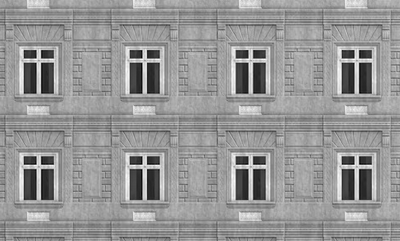
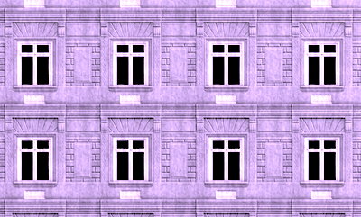

Web Awesome Component Examples
This page demonstrates the jekyll-webawesome plugin’s custom Markdown syntax for creating Web Awesome components. Each component shows both the syntax and the rendered result.
Callouts
This is an info callout with bold text and links.
This is a success callout.
This is a warning callout.
This is a danger callout.
This is a neutral callout.
This is a brand callout (the official variant name, same as info).
Callouts with size
The size attribute affects internal padding and typography. Compare the compact padding of small with the generous spacing of large:
This is a small callout with compact padding.
This is a medium callout (default) with standard padding.
This is a large callout with generous padding.
Web Awesome 3.x size scale (xs–xl)
Web Awesome 3.x replaced the three-step small/medium/large scale with a
five-step xs/s/m/l/xl scale. Both work (legacy names are aliases),
but the new scale gives finer control — all five render as distinct sizes:
xs — extra small.
s — small.
m — medium (default).
l — large.
xl — extra large.
Callouts with appearance
The appearance attribute controls visual styling. Each appearance has a distinct look:
Accent — Bold and prominent with solid color, perfect for important notices.
Outlined — Subtle with just a border, good for less critical info.
Plain — Minimal styling with just text color, most subtle option.
Filled — Solid background without border, strong visual presence.
Filled-outlined (default) — Combines filled background with border for maximum clarity.
Custom Icons
Override the default variant icon with icon:name:
Security notice — uses a shield icon instead of the default warning icon.
Launch update — custom rocket icon for brand callout.
Approved! — thumbs-up icon overrides the default checkmark.
Critical failure — custom icon for emphasis.
Custom icon with size and appearance:
Pro tip — a large filled callout with a lightbulb icon. Size and appearance work alongside custom icons.
Animated callout icons
Callouts can override their icon’s family/variant/animation. Animation needs
no Pro kit — the icon below visibly animates:
This warning’s icon animates.
Combined size and appearance
Small accent callout — compact and eye-catching.
Large filled-outlined warning callout.
Icons
The standalone :::wa-icon block accepts the icon name first, then optional
family / variant / animation tokens (order-independent), and an optional
block body that becomes the accessible label. The inline $$$name form stays
name-only and decorative.
Animation (no Pro kit required)
These animate purely with CSS, so the motion is visible regardless of the kit tier:
Accessible label
A non-empty block body becomes the icon’s accessible label. An empty body leaves
the icon presentational (no label):
Variant and family (Pro weights/families)
The variant (Font Awesome weight) and family attributes reach the <wa-icon>
element. Whether the glyph visibly changes depends on the kit’s Font Awesome tier:
Combined
Family, variant, animation, and a label together:
Inline icons are unchanged
Inline icons stay name-only and decorative — use them mid-prose like the
Tags
Tags can be used in two ways: block syntax (with newlines) or inline syntax (on the same line with spaces).
Basic Tag Variants
Appearance Styles
Tags support four different appearance styles:
You can combine variants with appearances:
Sizes
Tags come in three sizes:
Combined with variants:
The Web Awesome 3.x five-step scale (xs/s/m/l/xl) is also supported:
Pill Shape
The pill attribute gives tags rounded edges:
Tags with Icons
Add an icon inside a tag with icon:name:
Combined with other attributes:
Inline tags with icons:
Removable Tags
Tags with the with-remove attribute show a remove button:
Combined Attributes
All tag attributes work together in any order:
Inline Tags
Use inline tags in headings or within text:
In Headings
Feature v2.0 Released
Status Beta Features
In Text
This release has
You can use multiple variants:
Inline with Attributes
Inline tags support all attributes:
Status
Comparison


This shows before/after comparison functionality with initial position at 25%.
Details/Summary (Collapsible Content)
Click to expand this summary
This is the detailed content that can be collapsed and expanded.
You can include: - Lists - Bold text - Links - Code blocks
Filled appearance summary
Content goes here
Plain appearance summary
Content goes here
Filled and outlined appearance summary
Content goes here
Icon placement
Defaults to end but you can use start to get the icon at the beginning.
Plain appearance summary
The icon is in the beginning now
Custom Expand/Collapse Icons
Replace the default toggle icon with custom expand and collapse icons:
Click to expand (plus/minus icons)
Custom expand/collapse icons make the interaction more intuitive. The plus becomes a minus when opened.
Chevron icons with filled appearance
Chevron-down when collapsed, chevron-up when expanded. Combined with filled appearance.
Caret icons (open by default)
This uses right/down caret icons and starts expanded.
Disabled State
The disabled attribute prevents the details from expanding:
This summary cannot be expanded
This content is locked and cannot be viewed (you can’t see this!)
Filled but disabled
This content is also locked
Open by Default
The open attribute makes the details initially expanded:
This details is open by default
You can see this content immediately when the page loads. Click the summary to collapse it.
Open with styled appearance
This one is also initially expanded with custom styling.
Accordion Behavior (Grouping)
Use name:group-id to create accordion behavior where only one can be open at a time:
First Section (initially open)
This section starts open. When you click another section below, this one will automatically close.
Second Section
Click this summary to open this section. The first section will automatically close.
Third Section
Opening this section will close whichever section is currently open.
Combining Multiple Attributes
All attributes can be combined in any order:
First Styled Section
This has custom appearance, icon position, starts open, and is part of an accordion group.
Second Styled Section
Same styling and grouping. Opening this closes the first section.
Accordion
A multi-section collapsible container — the grouped sibling of Details/Summary, ideal for FAQs and docs sections. The container fence is ////// (6 slashes) and each item is a /// block (3 slashes) with an explicit /// close. (Web Awesome flags wa-accordion as experimental, but everything used here is declarative and static-safe.)
Basic FAQ
Web Awesome is a library of framework-agnostic web components.
The core library is free and open source. A Pro tier adds more icons and components.
Add the CDN <script> tag, or install the npm package. See the docs for details.
Appearances
The appearance token controls the chrome. It defaults to outlined; filled, filled-outlined, and plain are also available.
The accordion items have a filled background.
Content for the second item.
No borders or fill — just the dividers.
Content for the second item.
Single mode
With mode:single only one section can be open at a time — opening one closes the previously open one. (One section always stays open.)
Open another section and watch this one close automatically.
Only one section in this accordion can be open at once.
Opening this closes whichever section was open.
Single-collapsible mode
mode:single-collapsible behaves like single, but the open section can also be collapsed, leaving everything closed.
Like single mode, but you can also click the open section to close it.
Now all sections can be closed at the same time.
Icon placement
The expand/collapse icon sits at the end by default; start moves it to the leading edge.
The chevron is at the start of the header instead of the end.
Content here.
Heading level
Use heading:N (1–6, or none) to set the semantic heading level the items render as, for correct document outline / accessibility.
This item’s header is exposed as an <h2>-level heading to assistive tech.
Same heading level for consistent document structure.
Expanded item
Mark an item expanded (leading flag) to have it open on load.
This section starts expanded when the page loads.
This one starts collapsed.
Disabled item
A disabled item renders but can’t be toggled.
You can see this header, but it can’t be expanded.
This section works normally.
Custom item icon
Use icon:name on an item to replace its default expand icon with a Web Awesome icon.
This item uses a star icon in its expand slot.
And this one uses a question-mark icon.
Rich item bodies
Item bodies are full Markdown and may contain other components — callouts, buttons, lists, and more.
Nested components render correctly inside accordion items.
Steps to get started:
- Install the library
- Add a component
- Ship it
Alternative syntax
Every container component also has a :::wa-… form. Here the same items use :::wa-accordion:
The alternative syntax accepts the same container tokens (filled single here).
And the same /// item blocks.
Tab Groups
Basic Tab Group
Default placement at top:
Content for the first tab goes here.
Content for the second tab.
Content for the third tab.
Tab Placement
Tabs on the left side (start):
Content here with start placement
More content
Tabs on the bottom:
Content here with bottom placement
More content
Tabs on the right side (end):
Content here with end placement
More content
Initial Active Tab
Set which tab is active on load (second tab is active here):
This is not active initially
This tab is active on load!
This is not active initially
Keyboard Navigation
Manual activation requires Space/Enter after arrow key navigation:
Use arrow keys to focus, then press Space or Enter to activate.
Try navigating with arrow keys!
Manual activation prevents accidental tab switches.
Auto activation (default behavior) switches immediately:
Arrow keys switch tabs immediately.
No need to press Space or Enter.
Scroll Controls
Disable scroll arrows for many tabs:
No scroll arrows displayed
Content 2
Content 3
Content 4
Content 5
Combining Attributes
All attributes work together in any order:
Not initially active
Also not active
This tab is active on load, tabs are at bottom, and keyboard navigation is manual!
Complex combination with all features:
Basic settings
This tab is active initially. Tabs are on the right, keyboard navigation is manual, and scroll controls are disabled.
Professional settings
Alternative Syntax
Using explicit :::wa-tab-group syntax:
This uses the alternative syntax with start placement and manual activation.
Alternative syntax works the same way!
All attributes work with alternative syntax:
Not active
Active on load using alternative syntax
Also not active
Badges
Buttons
Basic Button Variants
Link buttons with different variants:
Regular buttons (non-link):
Buttons with Icons
Add icons to buttons with icon:name (start slot by default) or icon:end:name:
Button with end icon:
Button with both start and end icons:
Icons with other attributes:
Button Appearances
Buttons with different appearance styles (using brand variant):
Button Sizes
Buttons in different sizes:
Size combined with variant:
The Web Awesome 3.x five-step scale (xs/s/m/l/xl) renders five
distinct button sizes:
Pill Buttons
Pill buttons have rounded edges:
Pill link buttons:
Buttons with Caret
Buttons with dropdown indicator:
Button States
Loading state:
Disabled state:
Complex Combinations
Multiple attributes combined:
Link button with all attributes:
Alternative Syntax
Using :::wa-button syntax:
Link Targets and Downloads
These attributes apply to link-form buttons only (a button wrapping a markdown
link). _blank opens the link in a new tab and automatically adds
rel="noopener noreferrer"; download makes the link download the target file
instead of navigating to it.
Open an external link in a new tab:
Download a file (served from /downloads/sample.txt):
Copy Buttons
Basic copy buttons:
Copy buttons with markdown formatting:
Multiline copy button examples:
Tooltip Placement
Control where the tooltip appears relative to the button:
Tooltip Mode
Control when the built-in tooltip appears.
Custom Labels
Customize the tooltip messages for different states:
Feedback Duration
Control how long the success message is displayed (in milliseconds):
Disabled State
Disabled copy buttons cannot be clicked:
Copy from Another Element
Copy content from other elements by ID (requires the element to exist on the page):
This text can be copied
Combined Attributes
Mix and match attributes in any order:
Alternative Syntax
The :::wa-copy-button syntax works identically:
wa-copy-button right Alternative syntax with right tooltip :::
Dialogs
Manual Dialogs
Basic dialog:
This is a simple dialog with markdown support and links.
Dialog with heading as label:
Please read this information carefully before proceeding.
Dialog with light dismiss (click outside to close):
You can close this dialog by clicking on the overlay.
Dialog with custom width (600px):
This dialog is 600 pixels wide.
Dialog with custom width (50vw):
This dialog is 50% of the viewport width.
Dialog with all options combined:
This dialog has light dismiss enabled and is 700px wide. It includes:
- Markdown formatting
- Lists and structured content
- External links
- Code:
console.log('Hello')
Click outside or use the close button below!
Alternative syntax:
This uses the :::wa-dialog syntax instead of ???.
This combines alternative syntax with light-dismiss and 45em width.
Image Dialogs (Auto-transformed Images)
Note: Enable this feature in _config.yml:
webawesome:
image_dialog: trueWhen enabled, all images automatically become clickable and open in a full-size dialog:
You can control the dialog width by adding a width parameter in the title:
Same with a big image
You can also control thumbnail display width with inline HTML:
To prevent an image from being transformed, add "nodialog" to the title attribute:
Images in inline code are automatically protected:  won’t be transformed.
Popovers
Popovers show floating content when a trigger is clicked. They use &&& syntax with >>> to separate trigger text from popover content.
Basic Popover
Default placement is top:
This is a basic popover with markdown support.
Placements
This popover appears below the trigger.
This popover appears to the left.
This popover appears to the right.
Without Arrow
This popover has no arrow pointing to the trigger.
Custom Distance
This popover has extra distance from its trigger element.
Combined Parameters
Combines placement, no arrow, and custom distance. All parameters work together in any order.
Link Style
Use the link flag to render the trigger as a link-styled element instead of a button:
The link flag renders the trigger as underlined text that looks like a hyperlink, blending naturally into paragraphs.
Link style with placement:
Web Awesome is a collection of beautifully designed, framework-agnostic web components built on open web standards.
Link style with all parameters:
By using this site, you agree to our terms of service and privacy policy. All content is provided as-is.
Rich Markdown Content
Popovers support full markdown inside — multiple paragraphs, lists, links, emphasis, and more:
Key highlights:
- Fast rendering with zero JavaScript overhead
- Support for all Web Awesome components
- Full documentation available
Works great for contextual help and tooltips with rich formatting.
System requirements:
- Jekyll >= 3.7
- Kramdown >= 2.0
- Web Awesome CSS/JS loaded via Kit
You’ll also need bundler to manage gem dependencies. Run bundle install after adding the gem to your Gemfile.
Alternative Syntax
Inline Syntax
Popovers can be used inline within a sentence. They always render as link-styled triggers. Use <button type='button' id='popover-58a22e77' class='ma-popover-trigger' style='background: none; border: none; padding: 0; color: inherit; text-decoration: underline; text-decoration-style: dotted; cursor: pointer; font: inherit;'>trigger text</button><wa-popover for='popover-58a22e77' placement='top'>popover content</wa-popover> on a single line:
Send invoices via
Inline popovers support all placement parameters. Learn about
You can combine parameters too: check the
Multiple inline popovers work on the same line: use
Alternative Syntax
This uses the :::wa-popover syntax instead of &&&.
The link flag also works with alternative :::wa-popover syntax.
Tooltips
Tooltips show brief contextual help on hover or focus — ideal for glossary terms and inline definitions. The inline form puts the anchor term and the tip text inside triple parentheses, separated by >>>:
(((anchor term >>> tip text)))
The anchor term is rendered as a focusable, dotted-underlined span, and the tip appears in a <wa-tooltip> wired to it automatically. Zero JavaScript required.
Basic Inline Tooltip
Default placement is top. The web is styled with CSS
Placements
Each invoice is routed over Peppol
Authentication uses an API key
Files are delivered over SFTP
Custom Distance
Hover over SLA
Combined Parameters
The order of leading tokens doesn’t matter: read about OCR
Multiple Tooltips in One Sentence
A typical exchange touches several acronyms: VAT
Mid-sentence and HTML Escaping
Tip text is HTML-escaped, so symbols are safe: the ampersand\n: organisation numbers differ by country — Org number
SE: 10 digits
DK: 8-digit CVR
Alternative Syntax
For consistency with the other components, a block form is also accepted:
JIT
Dates / Timestamps
Render dates declaratively: the value is baked into the Markdown at build time and the browser formats it on the client. <wa-format-date year="numeric" month="long" day="numeric"></wa-format-date> produces an absolute, locale-formatted date (<wa-format-date>); a leading relative token produces a “3 days ago”-style phrase (<wa-relative-time>). No JavaScript wiring, no data fetching — ideal for blog post dates, changelog stamps, and “last updated”.
[[[2026-06-26 style:long]]]
[[[relative 2026-06-20]]]
Absolute Dates — Style Presets
A bare date defaults to style:long. The four presets trade brevity for detail:
- Short:
- Medium:
- Long (default):
- Full (with weekday):
Dates with Time
Datetimes use the T separator. Combine a date style: with a time: preset, and force a 24-hour clock with hour-format:24:
This release shipped on
Locale
The lang: (or locale:) token formats the date for another locale. The same day in French:
Granular Overrides
Granular tokens override a preset per field — here style:long with the month forced to its short form:
Relative Times
Prefix the date with relative for a phrase relative to now. This page was last updated
Add sync to keep the phrase ticking live while the page stays open: this session started
Block Syntax
A block form is also accepted; the selector name picks the mode:
Current Time
Omit the date entirely to format the viewer’s current time — useful for a live “generated at” stamp:
Cards
This is a basic card with just content.
Card Title
This is the card content that appears in the main area.
Featured Content
This card includes both an image and a title.
Get Started
Ready to begin your journey?
Complete Example
This card has media, header, content, and footer with a filled appearance.
Filled Card
This card uses the filled appearance.
Plain Card
This card uses the plain appearance.
Filled Outlined Card
This card uses the filled-outlined appearance.
Accent Card
This card uses the accent appearance for emphasis.
Card Orientations
Horizontal layout displays media and content side-by-side:
Horizontal Card
This card displays with a side-by-side layout where media appears on the left and content on the right. Perfect for showcasing features or products.
Filled Horizontal
Combine appearance and orientation attributes for varied styling. The filled appearance with horizontal layout creates a bold presentation.
Accent Horizontal
The accent appearance combined with horizontal orientation draws attention to important content while maintaining a modern side-by-side layout.
Plain Horizontal
The plain appearance with horizontal orientation creates a clean, minimal presentation ideal for simple content displays.
Carousel
Basic Carousel
Mountain Beauty
Breathtaking views of mountain peaks
Ocean Waves
Peaceful coastal scenery
Forest Trail
Walk through nature
Multiple Slides Per View
Show 3 slides at once:
Slide 1
First product description
Slide 2
Second product description
Slide 3
Third product description
Slide 4
Fourth product description
Slide 5
Fifth product description
With Navigation and Pagination
Slide One
Content for the first slide with navigation
Slide Two
Content for the second slide
Slide Three
Content for the third slide
Looping Carousel
Continuously loop through slides:
Product A
Description of product A
Product B
Description of product B
Product C
Description of product C
Autoplay Carousel
Automatically advance slides every 5 seconds:
Auto Slide 1
This carousel auto-advances every 5 seconds
Auto Slide 2
Watch it transition automatically
Auto Slide 3
Autoplay pauses during user interaction
Note: Autoplay interval is specified in milliseconds (5000 = 5 seconds). The default is 3000ms (3 seconds) if not specified. Autoplay automatically pauses when users interact with the carousel.
With Scroll Hint
Show adjacent slides peeking:
Product One
Product Two
Product Three
Advanced: Multiple Slides, Custom Move
Show 3 slides, move 2 at a time:
Feature 1
Description here
Feature 2
More details
Feature 3
Additional info
Feature 4
Extra content
Feature 5
Final item
Feature 6
Bonus item
Vertical Carousel
Top Item
First item in vertical layout
Middle Item
Second item
Bottom Item
Third item
Alternative Syntax
Alternative Syntax
First slide using alternative syntax
Second Slide
More content here
Layouts
Layout containers use :::: (quadruple colon) syntax to wrap content in Web Awesome CSS layout utilities. Layouts compose with component syntax — use ::: components inside :::: layouts.
Grid — Responsive Card Layout
Cards automatically arrange into a responsive grid:
Getting Started
Set up your project in minutes with our quick-start guide.
Components
Browse our library of 30+ accessible web components.
Theming
Customize colors, typography, and spacing to match your brand.
Grid with Custom Column Size
Use min: to control when columns wrap:
Wide Card One
This grid has a larger minimum column size, so it wraps to fewer columns sooner.
Wide Card Two
Great for content that needs more horizontal space to breathe.
Wide Card Three
Resize the browser to see the responsive behavior in action.
Wide Card Four
Four cards that reflow into 1–3 columns depending on screen width.
Stack — Vertical Spacing
Stack arranges items vertically with consistent spacing. Perfect for sequential content:
Step 1 — Install the gem: gem install jekyll-webawesome
Step 2 — Add it to your _config.yml plugins list.
Step 3 — Use the custom Markdown syntax in your posts and pages.
Step 4 — Build your site and verify the components render correctly.
Stack with Tight Spacing
A compact stack with small gap:
Tests passing
Build complete
Deployed to production
Extra-wide gaps (4xl / 5xl)
Web Awesome 3.4 extended the spacing scale with 4xl and 5xl. These produce
noticeably larger gaps than 3xl — useful for spacing out major page sections:
Section one — followed by a 4xl gap.
Section two.
Section one — followed by a 5xl gap (the widest step).
Section two.
Cluster — Inline Elements
Cluster wraps items inline with even spacing. Ideal for tag clouds and status indicators:
Cluster with Justify
Center a group of buttons:
Split — Two-Column Layout
Split distributes items evenly across the available space:
Left Column — This content sits on the left side of the split. Splits are perfect for navigation bars, headers, and any two-column layout.
Right Column — This content sits on the right side. When the screen gets too narrow, the items will stack vertically.
Flank — Sidebar Layout
Flank positions one item alongside content that fills the remaining space:
Sidebar
Main Content Area — The flank layout is perfect for sidebar navigation patterns. The sidebar has a fixed target width (250px here) while the main content stretches to fill the remaining space. When the screen is too narrow, the sidebar wraps below.
Frame — Constrained Aspect Ratios
Frame creates containers with consistent proportions. Great for images:
Nested Layouts
Combine layouts by using HTML for the outer container and :::: syntax for inner layouts. Here’s a grid of stacks:
Built-in accessibility for all components.
Dark mode and theming support.
Lightweight — no heavy frameworks required.
XSS protection built in.
CSP-compatible components.
Regular security audits.
Lazy-loaded components.
Tree-shakeable imports.
Under 10kb gzipped core.
Alternative Syntax
All layouts support ::::wa- prefix syntax:
This layout uses ::::wa-stack instead of ::::stack.
Both syntaxes produce identical output.